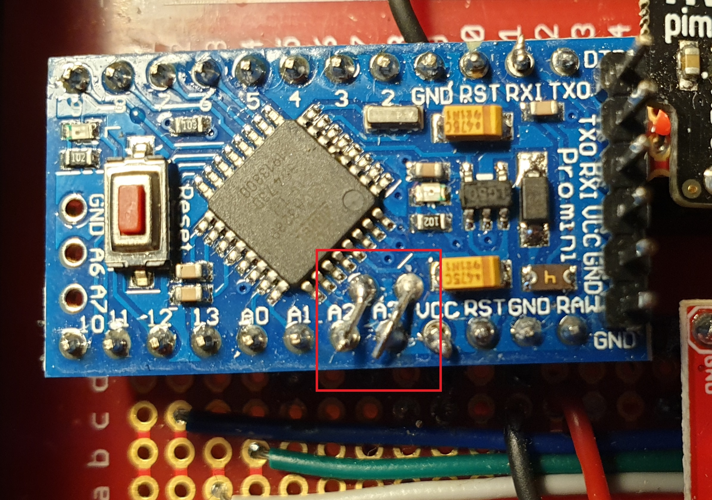
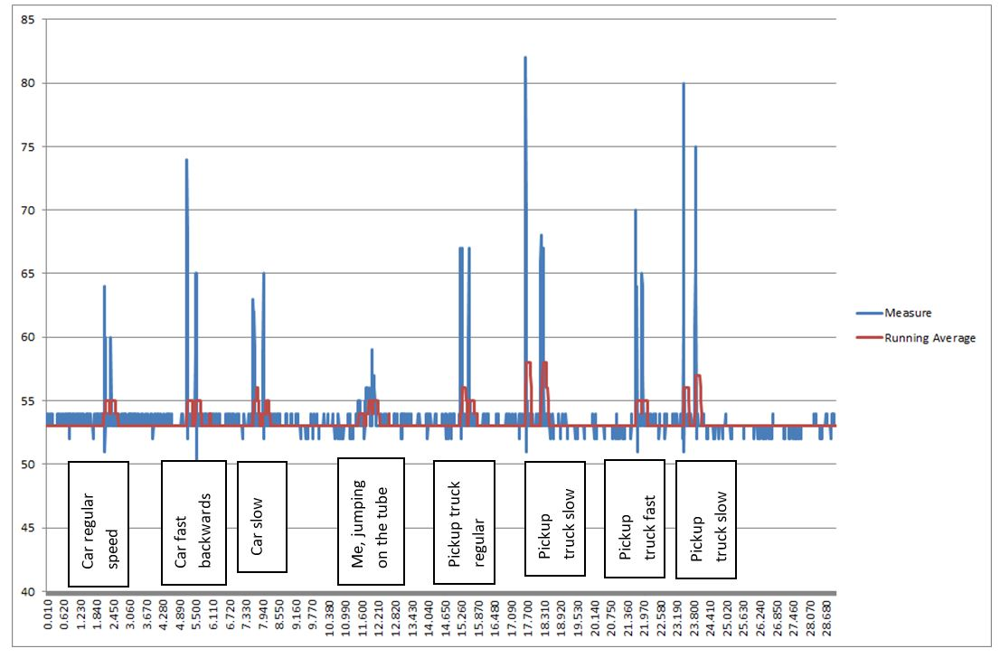

Arduino Car Counter (2019)
A battery powered car counter on a budget
Project Details / Background
While talking about electronics at work, my colleague metnioned a car counter he’d bought for a large sum of money that never really worked. I had the idea that I could build one myself, from Arduino, and thought I’d give it a try. Internet searching found the following projects that I used as inspiration:
- Arudino people counting, using PIR (passive infra-red)
- Kris Temmermen’s car counter on Hackaday
- Plus a one more that is now gone and only available on internet archive: makercave, and tomorrow-lab which doesn't have all the files any more. All of these sites were incredibly useful, both for ideas, inspiration and code help.
The plan was to use a pressure sensor to record when there is a change in pressure inside a sealed rubber tube, such as when a car drives over it. Simple! I wanted to make it as low-power as possible, so it would run for a good while before needing batteries changed. It’s to be deployed in a rural location, counting cars coming in and out of a car park.
Kit:
- Arduino Pro Mini 328 - 5V/16MHz
- MPX5100DP Pressure Sensor
- RV 3028 RTC Breakout
- SparkFun Level Shifting microSD Breakout
The car counter uses Arduino Pro Mini, a great, compact, low power arduino. However, it doesn't have a USB socket, so power needs to go straight to a pin, carefully, and it needs an FTDI board to convert USB to TTL, or something similar, so it can be programmed. It also has offset A4 (SDA) and A5 (SCL) pins. This is a pain when using a breadboard because they don’t line up with any holes. The trick is to solder them to A2 and A3 respectively, turning those pins into SDA and SCL.
Cars run over a rubber tube on the ground, which is connected to a NXP MPX5100DP pressure sensor.
Connecting it up:
You can connect up the Clock (RV 3028) and the microSD card breakout as normal. The pressure sensor - MPX5100DP - has 6 pins. Pin 1 is notched, and connects to any pin. Pin 2 is ground and pin 3 is VCC. (NXP, who make the pressure sensor, have a surprisingly active and helpful online forum).
The pressure sensor works by measuring the pressure in one of the ports, and comparing it to the pressure in the other port. The difference is returned as a voltage between 0 and 5. This can then be converted to Kpa or mb but we don’t really need to know that, so we’ll just use the raw values the pressure sensor returns to us.
Code
I made two code files, one for calibration and one to run. As cars are all pretty much the same weight ("heavy") when compared to a human or an animal, and this let me see what that was.
The second code waited until the reading from the pressure sensor reached above a certain amount (worked out from the above) above the average of the past twenty readings. Changes in air pressure and temperature could affect the pressure in the tube, so an average is used instead. It measures a data spike, and it waits 400ms between readings. It writes this "hit" to the SD card with date and time.
Housing
Using a pelicase clone and a bulkhead connector, I was able to house everything in a nice waterproof unit. I added solar power with an energiser and a small solar panel.
Testing and Calibrating
With the first code running, I drove a car, a pickup truck and finally I jumped on it a bit, then looked at the results graphed. This showed that the average time between each axle of the vehicles was 0.345s, and anything above 60 was probably going to be a car.
To install, the rubber hosing was sealed at one end (I used the T-connector with a short length joining the two arms to the T) just laid across the entrance to the car park and fixed in place with saddle clips, which were screwed into rawl plugs I drilled in the road. This needed keeping an eye on, as eventually they worked loose.
I regularly checked the results and tinkered the calibration to get it right. Obviously, the number of vehicles counted needed dividing by 4 (Two hits for each car, and each car enters and leaves the car park).
Power Consumption
I didn’t have a way of measuring low power, but I calculated the power consumption from the components as using 193mA when triggered, and 11.3mA when at rest. I had it running for 147 hours off 1900mAh batteries (12mA average), but there weren’t many cars to trigger it. There are loads of ways to further reduce power consumption of an Arduino pro mini (see https://www.gammon.com.au/power), but this was low enough for me to power it with a small 12V battery.
Future Ideas
This was simple to set up, and for under £100 I was able to not only accurately count the numbers of visitor's cars to the reserve, but the different numbers on each day and even time of day.
The first obvious improvement would be to implement a sleep function to save battery. And now it's a few years on, I would absolutely use ESP32 for this project, and have it send the data to a remote database rather than save to SD card.
Image Gallery

Connecting up SDA and SCL to pins A2 and A3
 Counter tech in the box, powered by batteries and with an on/off switch
Counter tech in the box, powered by batteries and with an on/off switch

Example of calibration graph